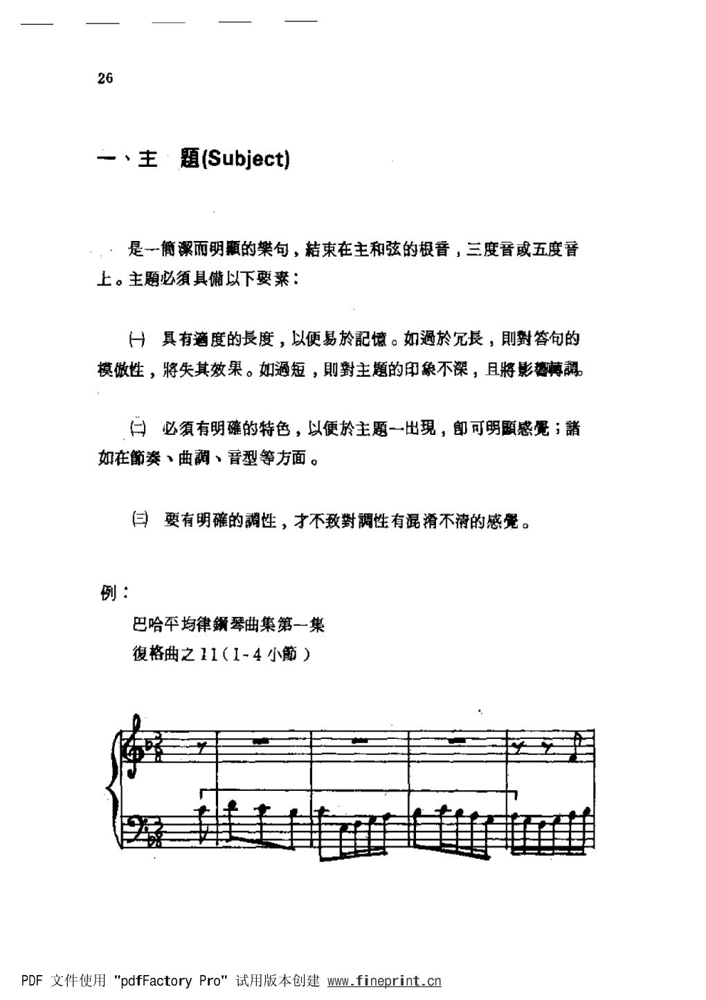

PDF 第 34 页 · 印刷页约 26
第三章 赋格曲的重要题材：主题
26
、主·题(Subject)
，是一潔而明的句，結束在主和弦的根音，三度音或五度音
上。主题必须具備以下要素：
一）具有適度的长度，以便易於記憶。如過於長，则對答句的
模做性，将失其效果。如過短，则對主题的印象不深，且將影蒋調。
（）必须有明確的特色，以便於主题一出現，郎可明显感冕；
如在奏、曲調、音型等方面。
三）要有明確的调性，才不致對調性有混淆不清的感覺。
例：
巴哈平均律琴曲集第一集
復格曲之11（I-4小）
PDF文件使用“pdfFactoryPro”试用版本创建www.fineprint.cn
- 主题的长度由“可记忆”与“可处理”共同决定
过短难以形成印象，过长会削弱答题的模仿效果；判断标准是主题能否在若干声部与变形中保持统一。
“具有适度的长度，以便易于记忆。如过于长，则对答句的模仿性将失其效果；如过短，则对主题的印象不深。”